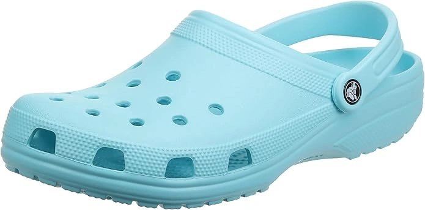
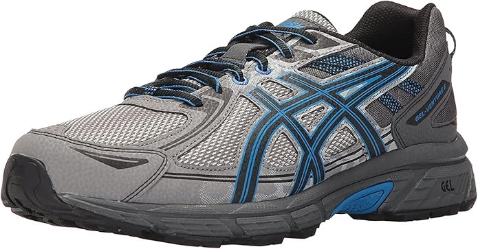
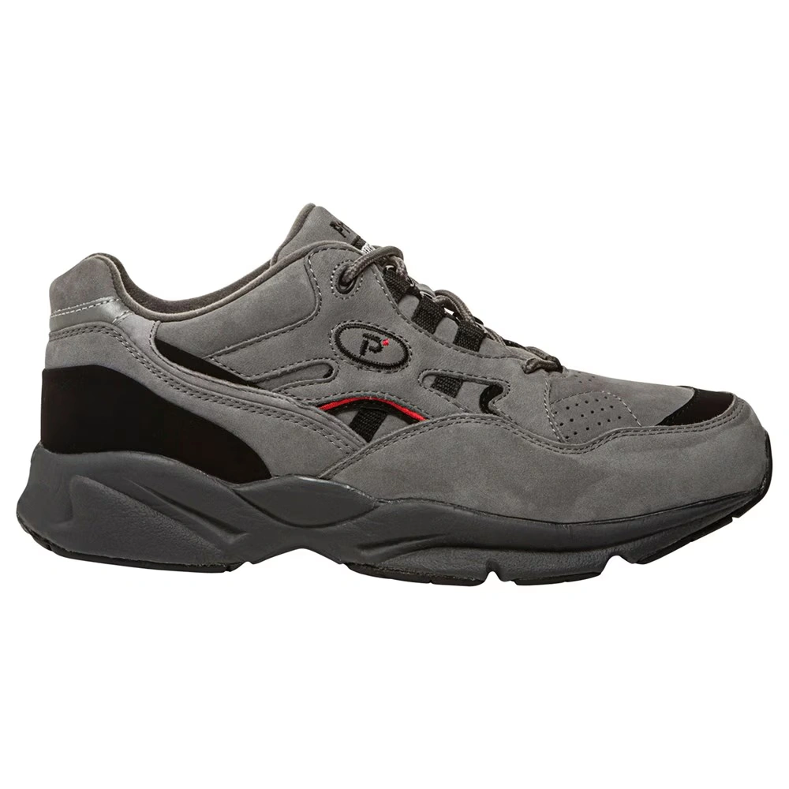
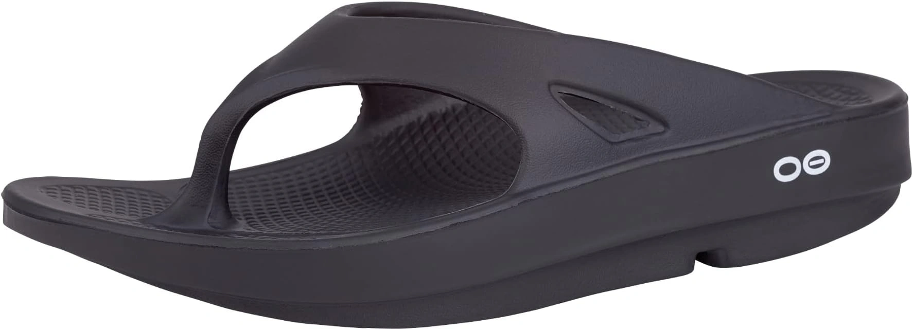
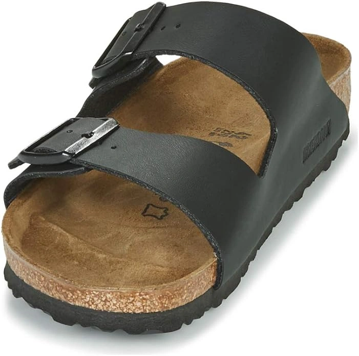
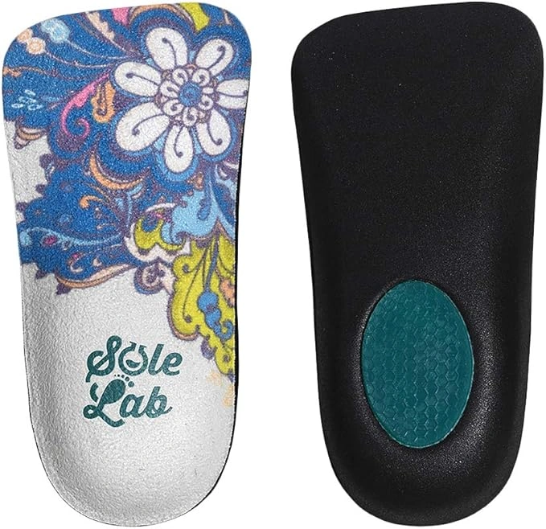
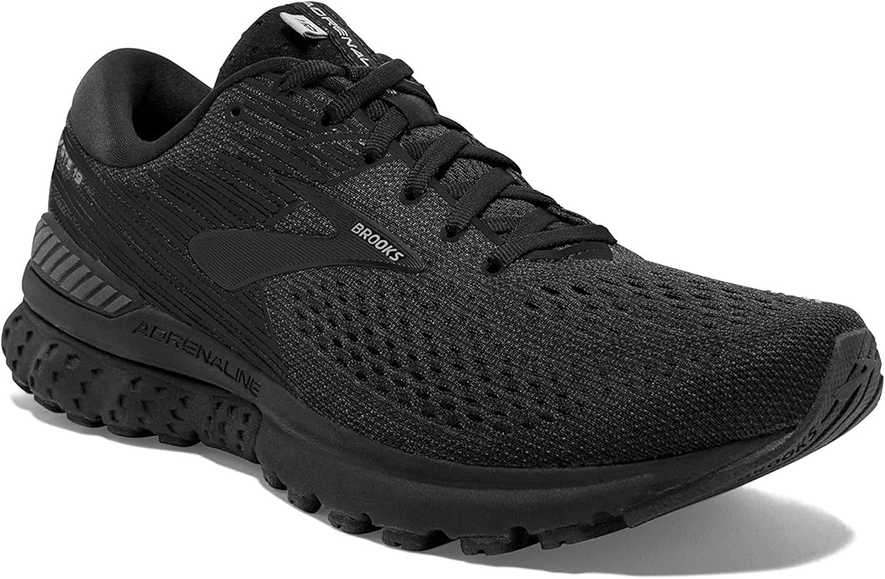

8 Best Shoes for Gout & Foot Pain Reviews 2024
Do you know what gout is? Gout is a form of Arthritis. It is almost as painful as an ankle injury or sciatica. The gout can be minimized to some extent with healthy food and healthy. In addition to it, a comfortable pair of footwear can also help you out. If you have an issue of gout or someone around you has swollen feet because of gout, it is important to suggest them a comfortable pair of shoes.
-
#1
Crocs Classic Clog
It is the most recognized pair of shoe for the people who have the issue of trout. This is designed by Crocks which is famous for providing the maximum comfort. These are a perfect choice for the people with gout as the feet are usually swelled and it gives enough room to accommodate swollen feet.
The clogs are light in weight with so many holes to make it a breathable pair. These are extra roomy and can be easily cleaned under a water tap. The sole of the footwear is made of ultra-light Crosslite patented foam. This allows the swollen feet to walk with ease and prevents the energy from entering the feet and joints. -
#2
Asics Gel Venture 6- Athletic Shoe
Nest on the list is another pair of comfortable pair of shoes which can provide the maximum comfort to the people with gout. It is an excellent all-rounding shoe.
The upper of the shoe is a combination of soft and flexible synthetic leather and mesh, flat shoes which allows the feet to breather even if it is worn for longer hours. It can help you out in let your feet breathe for longer hours.
The shoe is built with a wider toe box which gives comfort to the feet while walking or running. The running footwear is designed with fore foot and rear foot gel cushioning, which prevents the feet from shocks. It is built with AHAR high abrasion-resistant outsole and reinforcements and the rubber outsole allows the person with gout to walk on all kinds of terrains with full grip. -
#3
Propet Men’s stability Walker
The brand Propet knows how to makes it clients happy and satisfied with footwear they manufacture. This pair of shoe from the company is a comfort providing shoe which lets a person with gout walk or even run with ease without any discomfort. The shoe is made by the company entirely focusing on the style and comfort for the people. The footwear is made from breathable mesh and leather and is extremely light in weight. This not only makes the shoe durable but also allows the feet to breathe even if it is worn for longer hours. A heavy weight person can easily exercise and walking shoe in this pair. The footwear comes with removable insoles. This enhances the personalized comfort. The heel of the shoe is broader, which gives perfect gait and grip on floor. The sole is slip-resistant to allow the person walk on all kinds of terrain.
-
#4
OOFOS Original Thong
These are one of the most comfortable thongs if you have the problem of gout. OOfos is a company which has introduced the best and comfortable foot wear in the market. These gives much comfort to the swollen feet with gout. They absorb shocks for each step and provide maximum cushioning to the feet. This is how it makes them comfortable.
These thongs are made of soft rubber and are extreme light in weight. The material of the sole of these flip flops absorbs 37 per cent of external shocks. This prevents the feet and joints from the impacts of shocks. The flip flops are highly recommended for the podiatrists but a little highly priced in this category. -
#5
Birkenstock Arizona
Next on the list is these comfortable pair of slipper for people with gout. This is the best foot wear choice for swollen feet. The slipper is designed with two buckled straps and these are soft against the skin of swollen feet. They protect the skin of feet as they are made of leather. The foot bed is made of cork which is known to be the best ones in the market, and molds to individual foot shapes. It gives support to the pressure zones to the foot in pain.
It gives stable step to the sufferer. It has been built with a slip-resistant sole, and lets the person move with ease on dust and water. -
#6
Orthopedic Dress Shoes for Overweight
If you are seeking for a nice dress shoe and you have swollen feet due to gout , the Propet company has it for you to take care about your painful feet, as the company knows how to makes it clients happy when it comes to comfortable foot wear. The Propet has launched comfortable shoes for both genders: Propet Commuterlite for men and for women it is Propet Twilite Walker.
The shoe is made of full grain leather and mesh. The shoes are breathable and can be worn for longer hours too. The airflow through the shoe makes the swollen feet comfortable.
The soles of the shoe can be removed to give best fit to the heavy person. It comes with slip-resistant soles. It makes the foot wear perfect for all kinds of terrain. These are designed with an energy plate for efficient motion and helps conserve energy. -
#7
Brooks addiction 13

This is one of the best athletic shoes for people who have the issue of swollen feet and joint pain. It is a daily wear shoe but it can also be used for slight running and walking. In addition, it can also be worn for work shoe. The shoe is made of breathable mesh, which allows the feet to breathe even if it is worn for longer hours. It is designed with a moisture-licking lining, which ensures to provide the optimum temperature to the feet.
The shoe is designed with BioMoGo DNA midsole which gives maximum cushioning to the feet and protects the feet from external shocks. It is built with progressive diagonal Rollbar ensure that the person in pain distributes the pressure. It comes with a low to medium arch, giving comfort to the arch. The shoe comes in a reasonable price range. -
#8
Brooks Adrenaline GTS 19
This comfortable pair of shoe is from Brooks on the list, as the company knows how to make feet feel comfortable while walking or running and especially for those who have swollen feet. The Adrenaline GTS 19 comes for both genders and is among the favorite foot wear in the market. The upper of the shoe is made of synthetic mesh and soft rubber. Both of the manufacturing materials make it a breathable foot wear. Waking and running for longer hours or in summers are not an issue now. The insole of the shoe can be removed, which is a plus point. It is designed with a smoother heel to toe transition which has a rollbar for the control of pronation. A person with swollen feet can move with full grip on every kind of terrain, the shoe is built with a slip-resistant rubber sole.